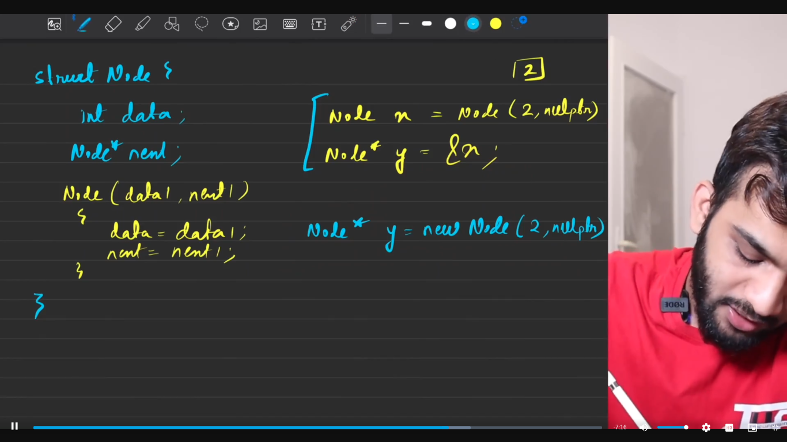

Singly Linked List
Table of Contents
1. What is a Linked List?
- As we know, the elements in an array are stored in contiguous memory location and hence limiting the space capacity.
- Linked List stores the element along with the address of the next element and hence solving the space capacity being faced in the arrays.
2. Where is it used?
- Primarily used in Stack and Queues.
- Used in Browsers to keep track of the tabs.
3. Data Structure for Linked List
3.1. Define a Self Defined Data type
- Since, we don't have any built in datatype to store the data and the memory location of the next element. We need to define it ourselves.
#include <bits/stdc++.h> using namespace std; int main(){ int x = 10; int* y = &x; cout << y << endl; // returns the address of x cout << *y << endl; // returns x return 0; }

#include <bits/stdc++.h> using namespace std; struct Node{ public: int data; Node* next; public: Node(int data1, Node* next1){ data = data1; next = next1; } public: Node(int data1){ data = data1; next = nullptr; } }; int main(){ Node y = Node(34, nullptr); // cout << y << endl; // returns an error since y is an object cout << &y << endl; // returns the address cout << y.data << endl; // returns the data cout << y.next << endl; // returns the next addr Node *x = new Node(23, nullptr); cout << x << endl; // returns the address of the node cout << x->data << endl; cout << x->next << endl; return 0; }
- Since Struct doesn't offer the benefits of OOP, classes are being preferred.
4. Memory used
5. Traversal in a Linked List
- Always never tamper the head
class Solution { public: vector<int> LLTraversal(ListNode *head) { vector<int> arr; ListNode* temp = head; while(temp != nullptr){ arr.push_back(temp->val); temp = temp->next; } return arr; } };
6. Deletion in a Linked List
6.1. Deletion of the head
- Since garbage collection need to be take care manually in cpp we need to free up the space of the head.

class Solution { public: ListNode* deleteHead(ListNode* &head) { if (head == NULL) return head; ListNode* temp = head; head = head->next; delete temp; return head; } };
6.2. Deletion of the tail
class Solution { public: ListNode* deleteTail(ListNode* &head) { if(head == NULL || head->next == NULL) return NULL; ListNode* temp = head; while(temp->next->next != NULL){ temp = temp->next; } delete temp->next; temp->next = NULL; return head; } };
6.3. Deletion of the Kth element
class Solution { public: ListNode* deleteKthNode(ListNode* &head, int k) { if(head == NULL) return head; if(k == 1){ ListNode* temp = head; head = head->next; delete temp; return head; } ListNode* temp = head; ListNode* prev = NULL; int count = 0; while(temp != NULL){ count += 1; if(k == count){ prev->next = prev->next->next; delete temp; break; } prev = temp; temp = temp->next; } return head; } };
6.4. Deletion of the element with value X
class Solution { public: ListNode* deleteNodeWithValueX(ListNode* &head, int X) { if(head == NULL) return head; if(head->val == X){ ListNode* temp = head; head = head->next; delete temp; return head; } ListNode* temp = head; ListNode* prev = NULL; while(temp != NULL){ if(temp->val == X){ prev->next = prev->next->next; delete temp; break; } prev = temp; temp = temp->next; } return head; } };
7. Insertion in a Linked List
7.1. Insertion at head
class Solution { public: ListNode* insertAtHead(ListNode* &head, int X) { ListNode* temp = new ListNode(X, head); return temp; } };
7.2. Insertion at tail
class Solution { public: ListNode* insertAtTail(ListNode* &head, int X) { if (head == NULL){ ListNode* temp = new ListNode(X, NULL); head = temp; return head; } ListNode* tail = new ListNode(X, NULL); ListNode* temp = head; while(temp->next != NULL){ temp = temp->next; } temp->next = tail; return head; } };
7.3. Insertion at the Kth element
class Solution { public: ListNode* insertAtKthPosition(ListNode* &head, int X, int K) { if(head == NULL && K == 1){ ListNode* temp = new ListNode(X); head = temp; return head; } if(K == 1){ ListNode* temp = new ListNode(X, head); head = temp; return head; } int count = 0; ListNode* temp = head; while(temp != NULL){ count += 1; if(count == K-1){ ListNode* el = new ListNode(X); el->next = temp->next; temp->next = el; break; } temp = temp->next; } return head; } };
7.4. Insertion before the value X
class Solution { public: ListNode* insertBeforeX(ListNode* &head, int X, int val) { if(head == NULL) return NULL; if(head->val == X){ ListNode* temp = new ListNode(val, head); return temp; } ListNode* temp = head; while(temp->next != NULL){ if(temp->next->val == X){ ListNode* el = new ListNode(val, temp->next); temp->next = el; break; } temp = temp->next; } return head; } };